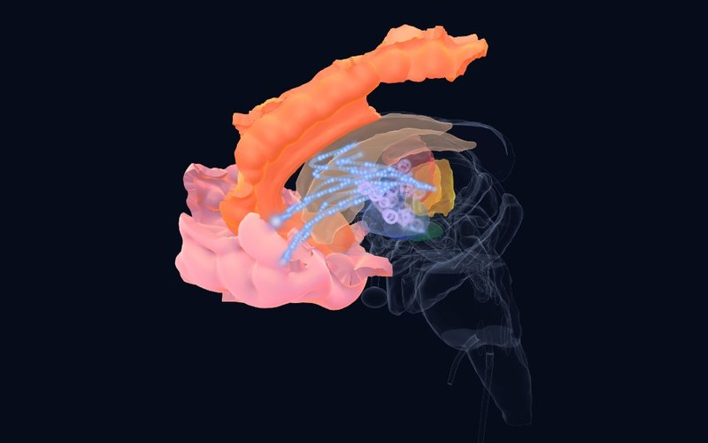
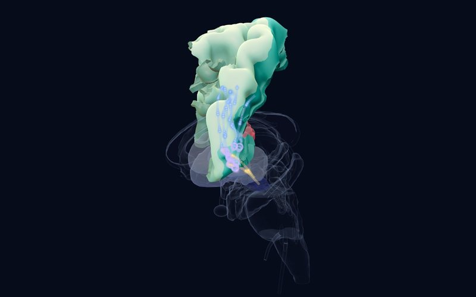

Newsletter · Issue 3 · 23 October 2026
Stopping, starting over and deciding together
This issue centres on the problem of "not being able to stop" in OCD and tics: two large studies from the same consortium test how the inhibitory control circuit works differently in children and adults and how it relates to response to CBT, and a genetic study finds a new locus for tics. In the neuroscience corner, a human recording shows that a decision can arise not from one brain but from two brains falling into step.
This week's studies
AMega‑analysisBiological Psychiatry2026
In OCD, the inhibitory control circuit works in opposite directions in children and adults
Adults 563 OCD / 348 controls, children 83 OCD / 114 controls (ENIGMA-OCD); in ABCD 343 probable OCD / 361 controls
DetailsClose

Atlas
Finding
The ENIGMA-OCD consortium reprocessed fMRI data from response inhibition and error processing tasks at the participant level with a single method. During error processing, fronto-striatal regions were less active in adults with OCD than in controls, whereas frontoparietal and attention networks were more active in children with OCD. As symptom severity rose, activity during response inhibition fell in adults and rose in children. In the ABCD cohort, children with probable OCD showed weaker frontoparietal network activity in the anterior insula and frontal operculum.
Why it matters
It suggests that the inhibitory control problem in OCD depends on both state and development: carrying adult findings directly over to children may mislead. In the atlas, the child and adult findings of the OCD circuit can be followed separately.
Limitation
Cross-sectional data and different tasks across sites; the child sample is much smaller than the adult one.
Džinalija N, van den Heuvel OA, Simpson HB, et al. Inhibitory control and error processing in Obsessive-Compulsive Disorder: A mega-analysis of task-based fMRI data by the ENIGMA-OCD consortium. Biological Psychiatry. 2026. doi:10.1016/j.biopsych.2026.09.021
AMega‑analysisEuropean Neuropsychopharmacology2026
Brain activity before treatment hints at CBT response in OCD, but is not yet an individual marker
5 sites, 130 patients with OCD, aged 8–57
DetailsClose
 Atlas
Atlas
Finding
Across five ENIGMA-OCD samples, pre-treatment inhibitory control fMRI in 130 patients was compared with response, remission and symptom reduction after CBT. Patients who remitted showed weaker activity in default mode network regions during response inhibition and in the right supramarginal gyrus during error processing. Those with greater symptom reduction showed weaker frontoparietal, attention, visual and subcortical activity during inhibition and stronger default mode activity during error processing. Machine learning predicted CBT response only modestly (AUC 0.66–0.67) and did not predict remission above chance.
Why it matters
Knowing in advance who will benefit from CBT is a major clinical question in OCD; this study points the way, but as the authors note, the findings have not yet become a marker that can be used for an individual patient.
Limitation
A small number of patients, a wide age range and different CBT protocols across sites.
Džinalija N, van den Heuvel OA, Simpson HB, et al. Predicting cognitive-behavioral therapy outcomes in obsessive-compulsive disorder from inhibitory control neural activity: A mega-analysis and machine learning study from the ENIGMA-OCD consortium. European Neuropsychopharmacology. 2026. doi:10.1016/j.euroneuro.2026.113879
AMeta‑analysis, genetic studyMolecular Psychiatry2026
A new genetic region for tic disorders: the 17q12 duplication
5,725 patients with Tourette syndrome or persistent tic disorder, 10,982 controls (three consortia)
DetailsClose

Atlas
Finding
Copy number variant data from three genomics consortia were combined with 3,291 new patients, more than doubling the sample of earlier studies. Ultra-rare deletions in genes intolerant of loss of function (OR 1.68) and known neurodevelopmental copy number variants (OR 1.42) were more common in patients than in controls. A duplication at 17q12 emerged as a new genome-wide significant locus for tic disorders: 8 patients and 1 control carried the roughly 1.4 Mb duplication.
Why it matters
The 17q12 duplication is a known syndrome with variable neuropsychiatric features, but this is the first time it has been linked to tics. It strengthens the case that rare, gene-containing copy number variants play a substantial role in the genetics of tics.
Limitation
Very few people carry the duplication; it is too early to recommend genetic testing for individual patients.
Halvorsen MW, Wang S, Miller-Fleming TW, et al. Persistent tic disorders are associated with 17q12 duplications. Molecular Psychiatry. 2026. doi:10.1038/s41380-026-03849-0
CExperimental studyNature Neuroscience2026
In mutual cooperation, two people's amygdalae come to resemble each other
Pairs of patients with epilepsy recorded simultaneously with intracranial EEG
DetailsClose
 Atlas
Atlas
Finding
Patients with epilepsy carrying intracranial electrodes played a real-time iterated prisoner's dilemma in pairs while both brains were recorded at once. Fine-grained spectral patterns in the amygdala became similar between partners only when both cooperated, and this similarity predicted the outcome of that round. Low-frequency suppression in the amygdala tracked a prospective estimate of whether the partner would cooperate, and theta-gamma coupling linked this estimate to the person's own decision. Conditional cooperators relied on tracking the partner, whereas unconditional cooperators relied on their tolerance of uncertainty.
Why it matters
The amygdala is often associated only with threat and fear; this study places it at the centre of cooperation and trust decisions. It points to the amygdala's part in social cognition in social anxiety, autism and difficulties with trust.
Limitation
A small number of patients with epilepsy and electrode sites chosen for clinical reasons; the findings should be generalized to healthy people with care.
Ni J, Meng F, Zhang C, et al. An amygdala-mediated simulation-to-decision cascade aligns interbrain dynamics to solve social dilemmas. Nature Neuroscience. 2026. doi:10.1038/s41593-026-02473-z
Structure of the week

Brainstem
Pons
The bridge between the cortex and the cerebellum; source of noradrenaline (locus coeruleus) and serotonin (raphe), and generator of REM sleep.
A question for readers
As each new study makes it clearer that adult findings in OCD do not simply apply to children, how far do you think the guidelines that steer treatment choice in childhood OCD rest on data specific to children?
You can send your answer by email:
[email protected]References
- Džinalija N, van den Heuvel OA, Simpson HB, et al. Inhibitory control and error processing in Obsessive-Compulsive Disorder: A mega-analysis of task-based fMRI data by the ENIGMA-OCD consortium. Biological Psychiatry. 2026. doi:10.1016/j.biopsych.2026.09.021
- Džinalija N, van den Heuvel OA, Simpson HB, et al. Predicting cognitive-behavioral therapy outcomes in obsessive-compulsive disorder from inhibitory control neural activity: A mega-analysis and machine learning study from the ENIGMA-OCD consortium. European Neuropsychopharmacology. 2026. doi:10.1016/j.euroneuro.2026.113879
- Halvorsen MW, Wang S, Miller-Fleming TW, et al. Persistent tic disorders are associated with 17q12 duplications. Molecular Psychiatry. 2026. doi:10.1038/s41380-026-03849-0
- Ni J, Meng F, Zhang C, et al. An amygdala-mediated simulation-to-decision cascade aligns interbrain dynamics to solve social dilemmas. Nature Neuroscience. 2026. doi:10.1038/s41593-026-02473-z
This newsletter is for education and is not medical advice; consult your doctor for diagnosis and treatment decisions. The summaries are written in our own words from the studies' abstracts and open-access full texts; see the article itself for details and definitive results.
Level of evidence (as in the atlas): A large consortium, meta-analysis or regulatory decision; B replicated studies or classic case; C single or pioneering study. Preprints have not been peer reviewed.